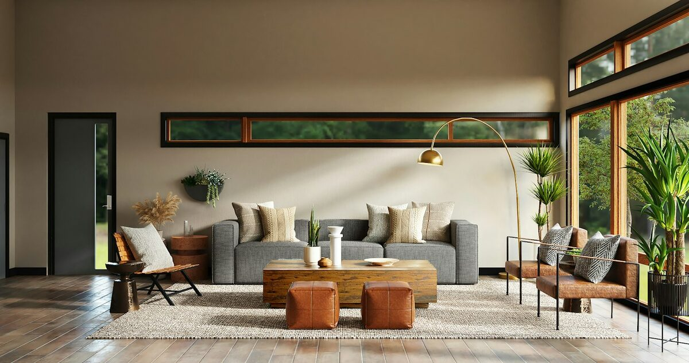
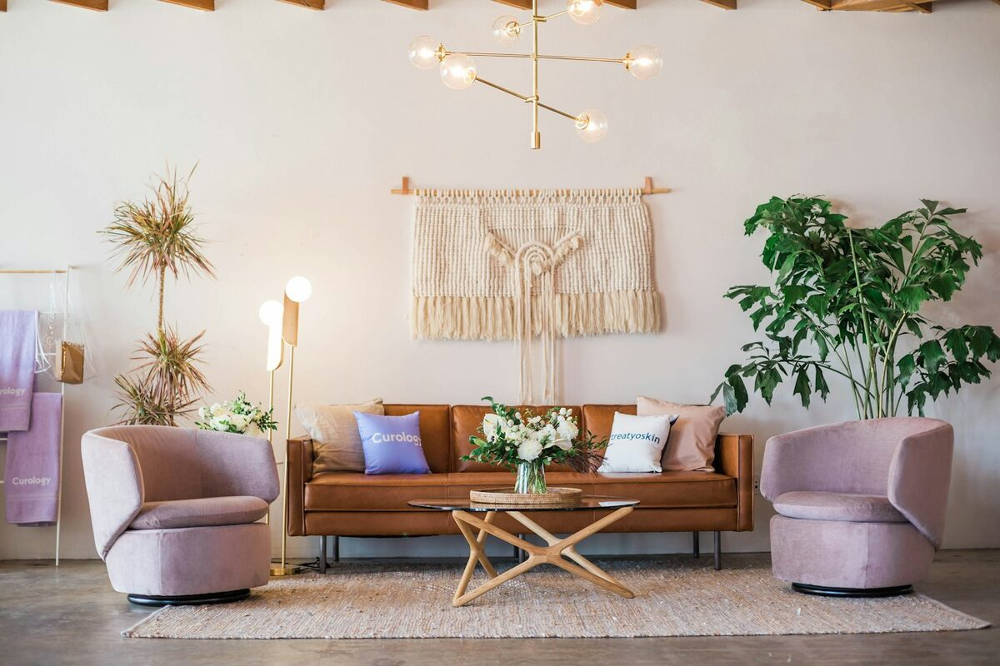
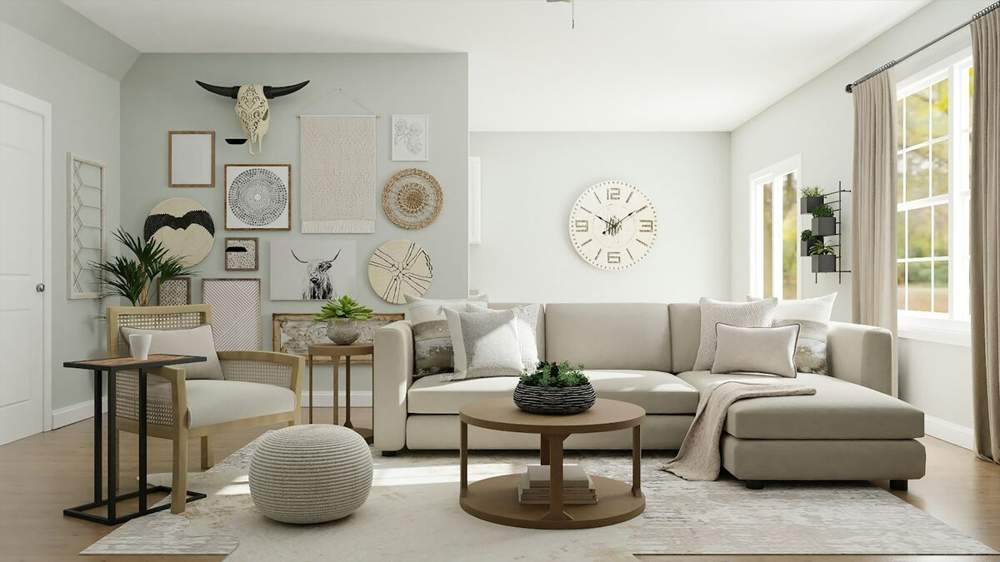
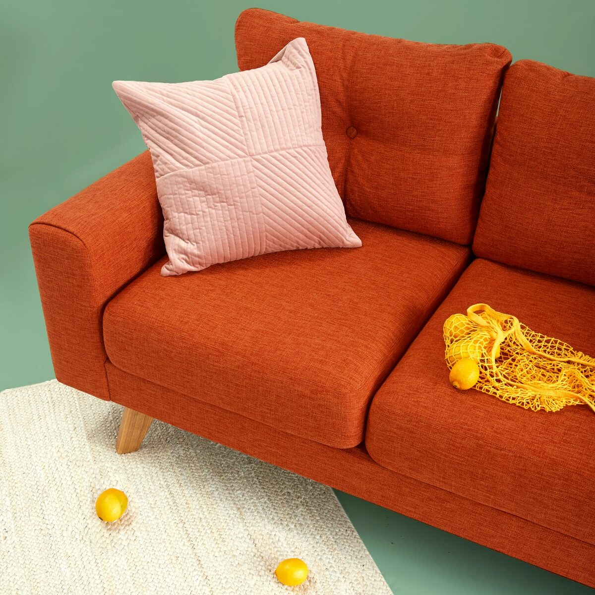

Sua casa com mais personalidade
Guias práticos de decoração para quem quer transformar os ambientes sem reformas caras.
Sobre o blog
O Casa & Estilo é um blog dedicado à decoração de interiores residenciais. A proposta é simples: reunir, em um só lugar, o conteúdo que ajuda qualquer pessoa a planejar a própria casa — mesmo sem formação em design e sem um orçamento alto.
Cada publicação do blog funciona como um pequeno guia. Explicamos o que caracteriza cada estilo de decoração, como adaptar as soluções a cada cômodo da casa e quais tendências realmente valem o investimento. O conteúdo é organizado em três eixos, que você encontra no menu de navegação e nos destaques logo abaixo: Estilos, Ambientes e Tendências. Na página de Contatos você pode enviar dúvidas, sugestões de pauta ou fotos do seu projeto.
Conteúdos de destaque
Clique em uma das imagens abaixo para abrir o conteúdo completo.

Estilos de Decoração
Minimalista, boho, industrial ou escandinavo? Descubra as características de cada estilo e qual deles combina com o seu jeito de morar.
Ver estilos →
Ambientes da Casa
Soluções cômodo a cômodo: sala, quarto, cozinha e home office, com dicas de layout, iluminação e aproveitamento de espaço.
Ver ambientes →
Tendências 2026
Cores, materiais naturais, iluminação em camadas e paredes-galeria: o que está em alta e como aplicar sem errar.
Ver tendências →Por onde começar
Se esta é a sua primeira leitura por aqui, sugerimos este caminho:
- Identifique o estilo com o qual você mais se identifica.
- Escolha um ambiente para aplicar as mudanças — de preferência o que você mais usa.
- Acrescente uma ou duas tendências atuais, sem transformar a casa inteira de uma vez.
Decorar é um processo: um ambiente bem resolvido vale mais do que a casa toda pela metade.
A regra dos três passos
Antes de comprar qualquer coisa, responda: como eu uso este espaço?, o que já tenho e posso reaproveitar? e qual é o meu limite de gasto?
Essas três perguntas eliminam a maior parte das compras por impulso e dão unidade ao resultado final.